5' 9" · A statuesque R&B vocalist in her thirties whose restraint reads as control; the roster's narrowest vertical silhouette. Tall, narrow and vertically composed beneath a fitted gown; never wide, squat or pin-up exaggerated. Her recognition cues are a tall narrow sculptural updo in pure black hair, with hard tone bands and a clean crown, an unbroken floor-length gown column, and a short rear train, all readable without facial detail; no wide hair mass, no headwear. She wears a deep indigo-violet floor-length one-shoulder satin gown, fitted through the bodice, falling in a straight column and pooling into a short rear train; feet and legs stay hidden; one pair of simple hoop earrings. She holds one slim wireless handheld microphone vertically at chin height in her character-right hand; no cord, no stand. Her ready stance is grounded beneath the gown with subtly flexed knees and staggered feet implied by the hem, chin level, the character-right hand holding the microphone forward at chin height, and the free palm flat at the sternum. Palette, as base/shadow/highlight per material: dark #20232B / #101217 / #3A3E48; white #F1EEE5 / #BDB9AE / #FFFFFF; metal #6F747C / #34383E / #B5BAC0; indigo-violet #382480 / #1C1240 / #6854C8; skin #9B573F / #603426 / #C77A5B; hair, black #141418 / #070709 / #3C3C44; earring #C7A84B / #796526 / #F1D776. Never draw: purple, violet, plum, blue or any tinted hair — the hair is black, and its highlight bands stay neutral grey rather than picking up the gown's colour; wide hair; visible feet or legs; feather boa, fan, sunglasses, tiara, or fur; glossy gradient satin; exaggerated pin-up proportions; microphone cable, stand, or duplicate microphone; cleavage-focused construction; logos, text, or real brands.
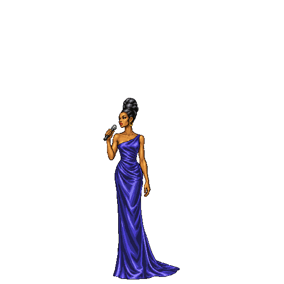
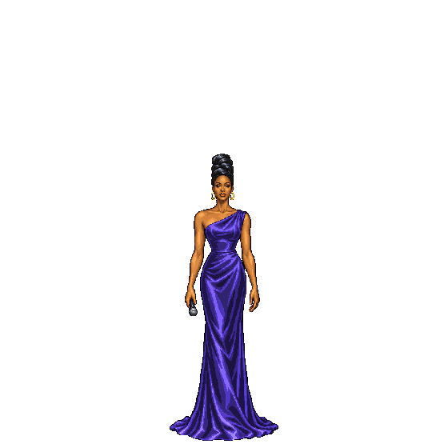
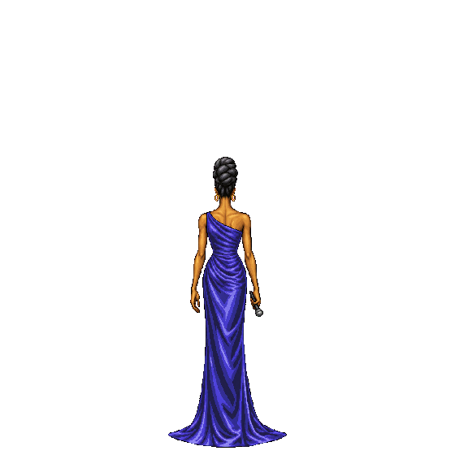
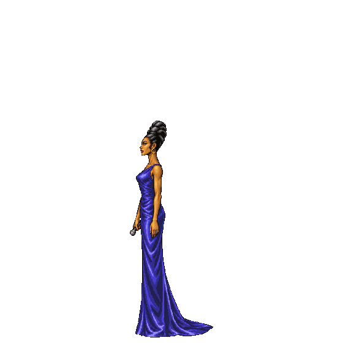
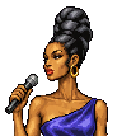
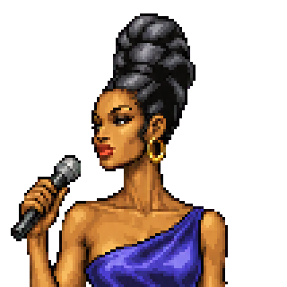
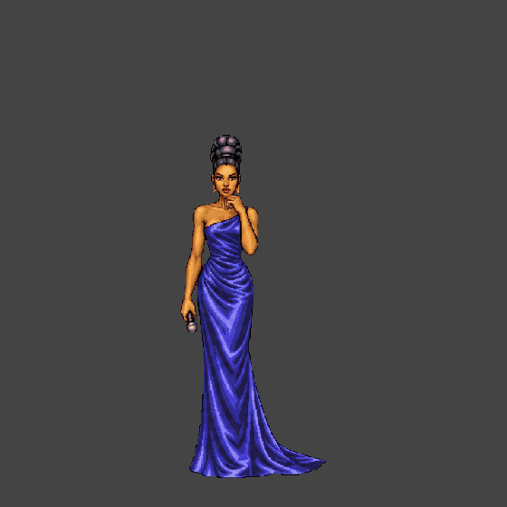
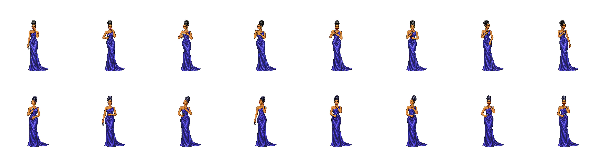
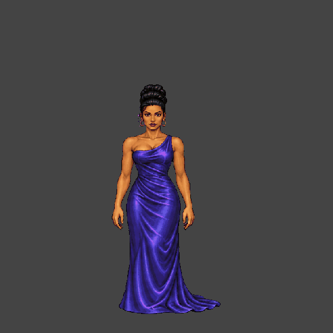
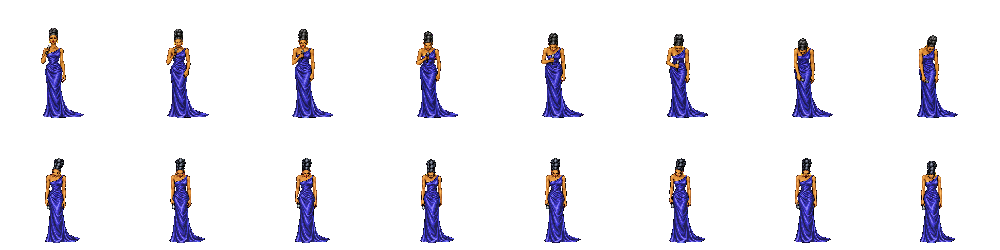
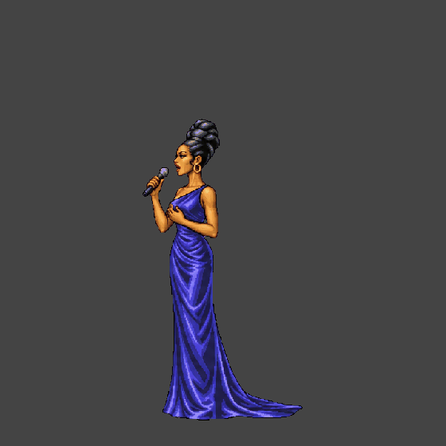
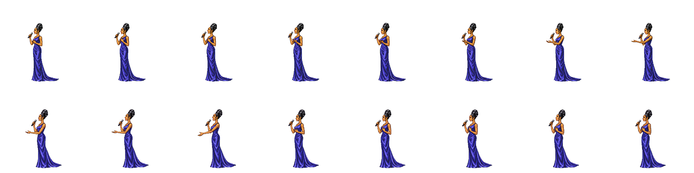
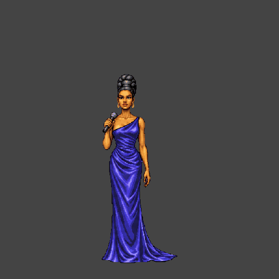
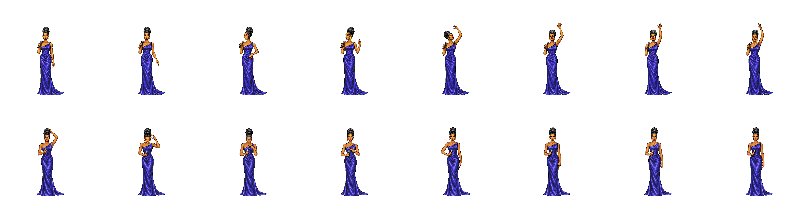